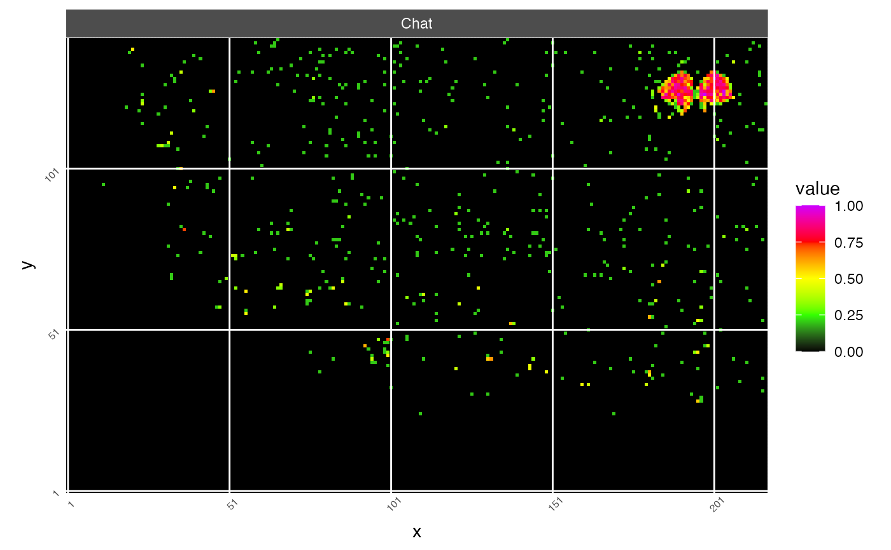
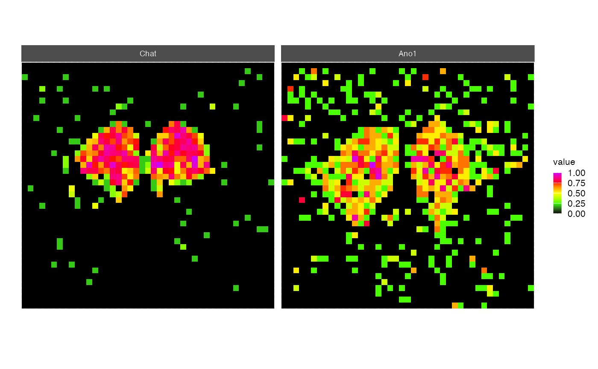
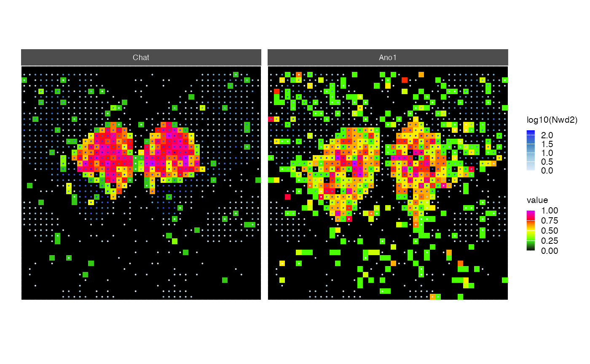

R/visualization.R
spatial_image.RdThis function displays a color-coded representation of the object (e.g. molecules) density observed in a spatial transcriptomics experiment.
spatial_image(
object = NULL,
features = NULL,
saturation = 1,
scale = TRUE,
colors = c("black", "#33FF00", "#FFFF00", "#FF0000", "#CC00FF"),
coord_fixed = TRUE,
overlay_feature = NULL,
colors_overlay = c("#DEEBF7", "#9ECAE1", "#3182BD", "blue"),
grid_by = NULL,
color_grid = "white",
size = 0.5,
logb = 10,
pseudo_count = 1,
ncol = 4
)The STGrid object.
The name of the features for which the spatial image will be created.
The ceiling level for the feature expression values. Defaults to 1 (no ceiling).
Logical value indicating whether to scale the feature expression values. Defaults to TRUE.
The colors to use for gradient fill in the spatial image. Defaults to a set of colors.
Logical value indicating whether to keep the aspect ratio fixed. Defaults to TRUE.
The feature to overlay on the spatial image. Defaults to NULL.
The colors to use for gradient fill in the overlay feature. Defaults to a set of colors.
Whether to overlay a grid with horizontal and vertical lines at particular interval. No overlay if NULL otherwise the size of the interval (e.g. 20).
A color for the grid.
The size of the overlayed points.
The basis for the log transformation. Default to 10. If NULL no log transformation.
a value for the pseudo count used for log transformation (default to 1).
The number of columns for the facets.
example_dataset()
xen <- Xenium_Mouse_Brain_Coronal_7g
spatial_image(xen,
features="Chat",
grid_by=50)

bx <- bin_x(xen)[175:nbin_x(xen)]
by <- bin_y(xen)[100:nbin_y(xen)]
sub <- xen[bx, by]
spatial_image(sub,
features=c("Chat", "Ano1"))

spatial_image(sub,
features=c("Chat", "Ano1"),
overlay_feature="Nwd2",
size=0.05)
